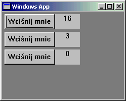

| << Tray Spis Strona g³ówna W³asne kontrolki, cz. 2 >> |
Kontrolki standardowe wraz z Common Controls to mo¿e niezbyt pokaŸny zbiorek, ale w zupe³noœci wystarczaj¹ do stworzenia wielu aplikacji. Jednak czêsto zdarza siê, ¿e chcielibyœmy w naszym programie czegoœ jeszcze - skoro inne programy to maj¹, to my te¿ mo¿emy ;-). Jednym ze sposobów rozszerzenia mo¿liwoœci naszych interfejsów graficznych (mo¿e nie najprostszym, ale za to daj¹cym najwiêcej satysfakcji) jest tworzenie w³asnych kontrolek. WinAPI daje tu kilka mo¿liwoœci:
Pierwsz¹ technikê ju¿ omówiliœmy we wczeœniejszych odcinkach tego kursu. Pozosta³ymi zajmiemy siê tutaj.
¯eby nie zaczynaæ z pustymi rêkami, warto czasem zastanowiæ siê, co w³aœciwie chcemy osi¹gn¹æ i co ju¿ zrobiono za nas. Jeœli na przyk³ad chcemy mieæ kontrolkê, która wygl¹da i dzia³a jak zwyk³y przycisk, ale obok niego wyœwietlana jest dodatkowo liczba "wciœniêæ", to najwygodniej bêdzie wykorzystaæ w tym celu po³¹czone si³y kontrolek BUTTON i STATIC.
Naszym celem jest stworzenie nowej kontrolki, czyli nowej klasy okien. Tak wiêc powinniœmy skorzystaæ z superclassingu. Klas¹ bazow¹ mo¿e byæ dowolna z predefiniowanych klas kontrolek, na przyk³ad STATIC (która zreszt¹ chyba najlepiej siê nadaje do tego celu). Pobieramy informacje o tej klasie i zmieniamy co trzeba:
|
WNDCLASS wc; GetClassInfo(hThisInstance, "STATIC", &wc); wc.lpszMenuName = NULL; wc.lpszClassName = "Nasza kontrolka"; wc.hInstance = hThisInstance; g_OldControlProc = wc.lpfnWndProc; wc.lpfnWndProc = ControlProc; |
Ustaliliœmy miêdzy innymi nazwê naszej nowej klasy ("Nasza kontrolka") oraz wskaŸnik na now¹ procedurê okna. Ten ostatni jest oczywiœcie sednem ca³ej operacji tworzenia nowej kontrolki. WskaŸnik na star¹ procedurê zachowujemy w globalnej zmiennej g_OldControlProc. Pora na napisanie nowej procedury, czyli ControlProc. Co powinna ona robiæ? Przede wszystkim - wywo³ywaæ star¹ procedurê okna, tê z klasy STATIC. Szczegó³y omówiliœmy ju¿ przy superclassingu, wiêc ju¿ wiesz, o co chodzi.
Drug¹ wa¿n¹ rzecz¹, któr¹ bêdzie robiæ procedura ControlProc, jest stworzenie przycisku i etykietki (STATIC), na której bêdzie wyœwietlana liczba klikniêæ. Musz¹ one oczywiœcie byæ oknami potomnymi dla naszej nowej kontrolki i dlatego w³aœnie bêd¹ tworzone wewn¹trz jej procedury okna. Bêdziemy potrzebowaæ jakichœ identyfikatorów dla przycisku i dla etykietki:
|
#define IDC_BUTTON 1000 #define IDC_LABEL 1001 |
Pora napisaæ procedurê ControlProc. Tworzenie wspomnianych dwóch kontrolek potomnych umieszczamy w obs³udze komunikatu WM_CREATE - ¿eby zosta³y stworzone tu¿ po przyjœciu na œwiat swego okna-rodzica.
Warto wspomnieæ, ¿e nie bêdziemy siê musieli martwiæ o zniszczenie tych dwóch okien, które tworzymy w WM_CREATE. System zrobi to za nas, poniewa¿ bêd¹ to okna potomne. A oto i procedura, o której tyle mówimy:
|
LRESULT CALLBACK ControlProc(HWND hwnd, UINT mesg, WPARAM wParam, LPARAM lParam) { switch(mesg) { case WM_CREATE: { CreateWindowEx(0, "BUTTON", "Wciœnij mnie", WS_CHILD|WS_VISIBLE, 0, 0, 100, 30, hwnd, (HMENU)IDC_BUTTON, GetModuleHandle(NULL), NULL); CreateWindowEx(0, "STATIC", "0", WS_CHILD|WS_VISIBLE|SS_CENTER, 100, 0, 50, 30, hwnd, (HMENU)IDC_LABEL, GetModuleHandle(NULL), NULL); } break; } return CallWindowProc(g_OldControlProc, hwnd, mesg, wParam, lParam); } |
Trudno mo¿e uwierzyæ, ale nasza kontrolka jest ju¿ gotowa. Wystarczy teraz tylko wywo³anie CreateWindowEx z nazw¹ klasy, któr¹ przed chwil¹ zarejestrowaliœmy:
|
HWND hControl = CreateWindowEx(0, "Nasza kontrolka", NULL, WS_CHILD|WS_VISIBLE, 5, 5, 150, 30, hwnd, NULL, hThisInstance, NULL); |
Ma³o siê napracowaliœmy, ale i ma³o w sumie osi¹gnêliœmy, poniewa¿ nasza kontrolka jeszcze nie dzia³a dok³adnie tak, jak sobie za³o¿yliœmy (a mianowicie nie liczy klikniêæ). I tu mamy nieco wiêkszy problem. ¯eby coœ liczyæ, musimy mieæ zmienn¹. Gdzie j¹ wpakowaæ? Moglibyœmy oczywiœcie, zadeklarowaæ j¹ jako zmienn¹ globaln¹. Pamiêtajmy jednak, ¿e potencjalny u¿ytkownik mo¿e stworzyæ (a ¿e wredny jest, to i pewnie kiedyœ stworzy) kilka instancji naszej kontrolki, a przecie¿ ka¿da powinna sobie liczyæ klikniêcia osobno... Wygl¹da wiêc na to, ¿e jeœli chcemy przechowywaæ liczbê klikniêæ "na zewn¹trz" kontrolki, to musimy mieæ do tego celu dynamiczn¹ tablicê.
Mo¿emy te¿ przechowywaæ te dane "wewn¹trz". Bêdzie to o wiele bardziej eleganckie rozwi¹zanie, bo "prywatne" dane kontrolki powinny byæ oddzielone od reszty programu. Nie przypadkiem u¿y³em s³owa "prywatne" - gdyby WinAPI by³o obiektowe, to now¹ kontrolkê tworzylibyœmy jako klasê w sensie C++, a licznik klikniêæ umieœcilibyœmy w sekcji private tej klasy. Jednak marzenia na bok - WinAPI obiektowe nie jest i musimy siê mêczyæ w inny sposób :-) (chocia¿ oczywiœcie nikt ci nie zabroni opakowania tego, o czym tu mówimy, w klasy C++).
Zapewne od pierwszego odcinka kursu WinAPI zastanawiasz siê, po co te extra bytes, o które ci¹gle potykamy siê przy rejestracji klasy okna. Otó¿ jest to miejsce, w którym mo¿emy przechowywaæ dowolne dane. Coœ jakby stworzonego specjalnie dla naszego licznika klikniêæ :-). Najpierw musimy powiedzieæ systemowi, ile tych dodatkowych bajtów chcemy. Nasze ¿¹dania nie mog¹ byæ zbyt wygórowane, bo system mamy wyj¹tkowo sk¹py; sam po¿era ³apczywie RAM w ka¿dej dostêpnej iloœci, ale jedno okno mo¿e mieæ najwy¿ej 40 bajtów na w³asne potrzeby, w dodatku nie mo¿emy u¿yæ z tego ostatnich 4 bajtów, bo tak sobie ¿yczy Microsoft. Oczywiœcie jeœli nasza kontrolka wymaga wiêcej dodatkowej pamiêci, to mo¿emy j¹ sobie zaalokowaæ sami, a do owych 40 bajtów pamiêci okna wrzuciæ sam wskaŸnik. Do naszego zadania z liczeniem klikniêæ jednak 40 bajtów to bêdzie a¿ nadto ;-). Doœæ gadania - dopisujemy do rejestracji naszej klasy now¹ linijkê:
|
wc.cbWndExtra = sizeof(DWORD) + 4; |
Dziêki temu ka¿de okno naszej klasy bêdzie mia³o do dyspozycji tyle bajtów, ile wynosi rozmiar typu DWORD (czyli 4 bajty).
Oprócz dodatkowej pamiêci dla poszczególnych okien klasy mo¿emy te¿ zarezerwowaæ dodatkowe bajty wspólne dla wszystkich okien tej klasy; w tym celu ustawiamy pole cbClsExtra.
Mamy ju¿ pamiêæ zarezerwowan¹, ale jak siê tam dostaæ? Proste - dziêki funkcji SetWindowLong. Dotychczas u¿ywaliœmy jej do zmiany ró¿nych parametrów okna, podaj¹c uchwyt tego okna, nazwê parametru, który chcemy zmieniæ (np. GWL_STYLE) oraz now¹ wartoœæ tego parametru. Tym razem zamiast nazwy parametru podajemy offset. Zamierzamy przechowywaæ 4 bajty licznika klikniêæ na samym pocz¹tku obszaru dodatkowej pamiêci okna, wiêc nasz offset wynosi 0. Do dzie³a wiêc - najpierw zadbajmy o to, by podczas tworzenia naszej kontrolki licznik by³ zerowany:
|
//to oczywiœcie powinno siê znaleŸæ w ControlProc :-) case WM_CREATE: { CreateWindowEx(0, "BUTTON", "Wciœnij mnie", WS_CHILD|WS_VISIBLE, 0, 0, 100, 30, hwnd, (HMENU)IDC_BUTTON, GetModuleHandle(NULL), NULL); CreateWindowEx(0, "STATIC", "0", WS_CHILD|WS_VISIBLE|SS_CENTER, 100, 0, 50, 30, hwnd, (HMENU)IDC_LABEL, GetModuleHandle(NULL), NULL); SetWindowLong(hwnd, 0, 0); //inicjalizacja licznika klikniêæ } break; |
Nastêpnie sprawimy, ¿e nasz licznik nareszcie zacznie dzia³aæ. Musimy w tym celu obs³u¿yæ komunikat WM_COMMAND (w procedurze ControlProc) oraz sprawdziæ, jakie wieœci niesie nam jego parametr wParam. Przypominam, ¿e HIWORD(wParam) zawiera kod powiadomienia (dla klikniêcia przycisku jest on równy BN_CLICKED), natomiast LOWORD(wParam) zawiera identyfikator kontrolki, któr¹ klikniêto (u nas powinien on byæ równy IDC_BUTTON). ¯eby zwiêkszyæ licznik o 1, musimy najpierw pobraæ "star¹" jego wartoœæ poprzez GetWindowLong, zwiêkszyæ j¹, a na koniec uaktualniæ wartoœæ przez SetWindowLong i wyœwietliæ. Piszemy:
|
case WM_COMMAND: { if(LOWORD(wParam)==IDC_BUTTON && HIWORD(wParam)==BN_CLICKED) { DWORD dwCounter = GetWindowLong(hwnd, 0); ++dwCounter; SetWindowLong(hwnd, 0, (LONG)dwCounter); SetDlgItemInt(hwnd, IDC_LABEL, (UINT)dwCounter, FALSE); } } break; |
Gotowe. Licznik dzia³a. Mo¿emy teraz stworzyæ kilka naszych kontrolek jednoczeœnie i sprawdziæ, czy nasze wysi³ki siê op³aci³y:
|
HWND hControl1 = CreateWindowEx(0, "Nasza kontrolka", NULL, WS_CHILD|WS_VISIBLE, 5, 5, 150, 30, hwnd, NULL, hThisInstance, NULL), hControl2 = CreateWindowEx(0, "Nasza kontrolka", NULL, WS_CHILD|WS_VISIBLE, 5, 40, 150, 30, hwnd, NULL, hThisInstance, NULL), hControl3 = CreateWindowEx(0, "Nasza kontrolka", NULL, WS_CHILD|WS_VISIBLE, 5, 75, 150, 30, hwnd, NULL, hThisInstance, NULL), |
Efekt powinien byæ (po paru klikniêciach na przyciski, rzecz jasna) nastêpuj¹cy:

Aha - ktoœ móg³by siê czepiæ, ¿e nie sprawdzamy, czy u¿ytkownik nie przekrêci przypadkiem licznika, klikaj¹c zbyt wiele razy. Otó¿ szanse s¹ doprawdy znikome :-). Zak³adaj¹c, ¿e w ci¹gu 1 sekundy klikniemy 4 razy, czyni¹c to przez ca³¹ dobê (86400 sekund) uzyskamy zaledwie 345 600 klikniêæ (a nie s¹dzê, by siê komuœ chcia³o ;-)). ¯eby przepe³niæ zmienn¹ typu DWORD, musielibyœmy tak klikaæ przez oko³o 12427 dni (34 lata) bez przerwy. Ale przecie¿ nie ma to jak poœwiêciæ pó³ ¿ycia s³usznej sprawie, prawda? ;-)
| << Tray Spis Strona g³ówna W³asne kontrolki, cz. 2 >> |